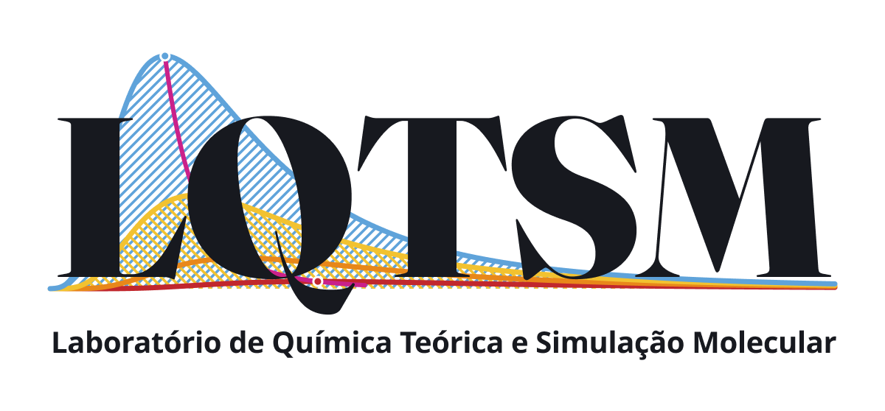
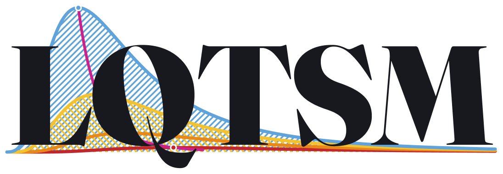

Versão principal (horizontal)
É a versão preferida. Use sempre que houver espaço na largura: slides, cabeçalhos de pôster, folhas de rosto, papel timbrado e banners.
Baixe o logotipo do laboratório para usar em apresentações, pôsteres, relatórios e trabalhos acadêmicos. O uso é livre para membros do LQTSM.
Três versões, para situações diferentes. Escolha pela forma do espaço que você tem.

É a versão preferida. Use sempre que houver espaço na largura: slides, cabeçalhos de pôster, folhas de rosto, papel timbrado e banners.
Para espaços estreitos ou proporções quadradas: foto de perfil em redes sociais, avatar, ícone de apresentação, canto de slide e adesivos.

A sigla e as curvas, sem a linha do nome por extenso. Use quando o logotipo tiver de ficar pequeno — canto de slide, cabeçalho de documento, rodapé — e o nome completo ficaria ilegível. É a versão usada no topo deste site.
As cores das curvas do logotipo. Use-as em gráficos, tabelas e slides para que o seu material converse com a identidade do laboratório. Clique em uma cor para copiar o código.
Regras simples para o logotipo continuar legível e reconhecível.
Para impressão em grande formato — banners, pôsteres A0, camisetas — o ideal é um arquivo vetorial (SVG, PDF ou EPS), que não perde qualidade ao ser ampliado. Escreva para haroldo.candal@uerj.br informando o tamanho final da peça.
{kind=link}
{kind=link}
{kind=link}